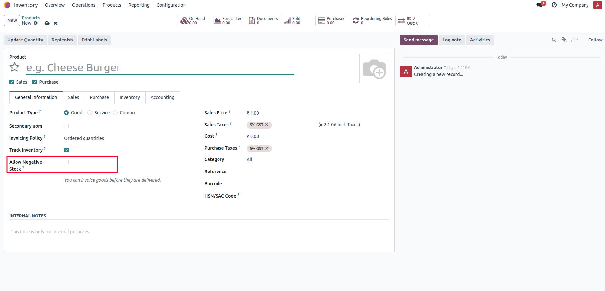
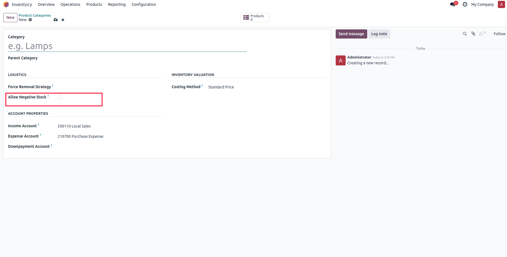
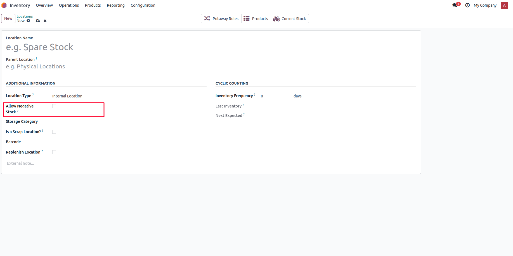
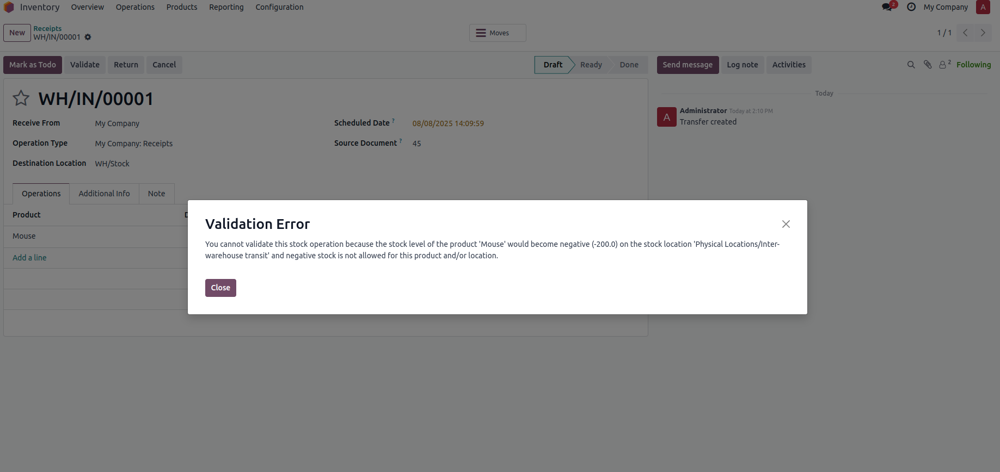

This module prevents negative stock for stockable products in Odoo by blocking operations that would result in a stock level below zero. It enhances inventory accuracy and ensures compliance with strict inventory management rules. Exceptions can be configured per product, product category, or location if needed.
Enable or disable negative stock for individual products from the Product form > General Information tab.

Set global rules for product categories under Inventory > Configuration > Product Categories.

Enable negative stock by location via Inventory > Configuration > Warehouse Management > Locations.

When trying to process a delivery or manufacturing order that causes negative stock, an error will be shown and the operation blocked.

When validating a stock operation (e.g., delivery, picking, or manufacturing) that would reduce stock below zero, Odoo will block the action for stockable products unless exceptions are configured. Consumable products can still go negative.